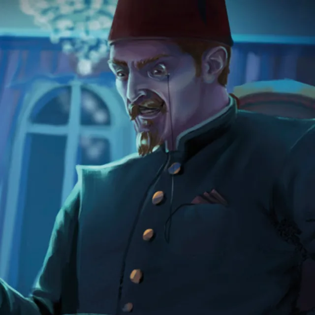

Chick Manu
Chique Manu, a notorious writer within the European underworld, is recognized for his stylish appearance—often adorned in a fez and a collarless buttoned-up jacket—which embodies a cosmopolitan flair that captivates those around him. He is known for his gambling habits that have led to both significant wealth and a subsequent downfall. His warm demeanor belies the darker aspects of his history, where his name has become synonymous with gambling schemes that have financially ruined many, particularly among the upper middle class.
On one occasion, he encounters Jean-Zera Mongé, greeting her with familiarity as he recalls meeting her father months prior in southeastern France. Their conversation is light yet subtly layered, revealing an intriguing dynamic as he alludes to having taken her father's return fare in a gamble, suggesting a hint of bad blood between them. Chique Manu expresses interest in her father's affairs, indicating complexities beyond mere finances.
During their interaction, he finds amusement in the dependence of the Janissaries on his resources, suggesting he holds significant power over them, keeping them on a figurative short leash. He has transitioned from a renowned poet to a wealthy fixer, known for extensive travel across Europe and North Africa, contributing to his sophisticated demeanor. He finances the Janissaries to diversify his house's financial dependencies and has influential connections within elite circles, allowing him to navigate social situations with ease.
With an invitation to the Karakoy Casino that evening, he maintains a playful tone while insisting that Jean-Zera be responsible for her own expenses, further reflecting his indulgent lifestyle, often leaving him indisposed after late nights. Throughout Europe, his reputation precedes him, frequently mentioned alongside figures like Hano "the Widow" and Giannis "the Cut." An allure persists around his character, blending charm with an undercurrent of menace and intrigue.
Another layer to Chique Manu shines during a festival, where he is seen seated at an outdoor table near a shadow theater. Here, his everyday persona emerges, characterized by an affinity for shiny objects, notably his gaudy ruby-studded ring, which he often touches for luck. In a sudden turn of events, animated shadows attempt to steal the ring, prompting him to express urgency and seek assistance from those nearby to retrieve it. Once the ring is successfully recovered, he shows gratitude by giving a banknote worth roughly 100 gold to Ahmet Yusuf, acknowledging the group's help in a manner that suggests the ring holds personal significance for him.
During an outing at a clandestine gambling club, Chique Manu arrived with Gizem Faruki and Jean-Zera Mongé, waved through as a guest due to his reputation. He shared details about his background, including his efforts to fund the Janissaries and his status as a wealthy fixer. While participating in a card game, he displayed impressive skill, ultimately revealing a royal flush in a significant hand. Gizem and Jean-Zera pursued the carriage in which he was taken. Following a chaotic engagement involving melee combat and magical distractions, Chique Manu was successfully rescued, thanking Jean-Zera for her efforts and mockingly placing a single para coin in Rashad's hand before returning to the game.
Chique Manu is also present at the Festival of Candles, where he witnesses the Ghost of March kill the perfumist Nazif, who is accused of betrayal. He appears in shock as chaos ensues and guards declare a state of emergency. Later, he invites Jean-Zera to continue their evening privately over stronger drinks, which she declines.
After the festival, Chique Manu joins a group at a late-night café to discuss the Ghost of March and recent events. He listens as others share information about the Ghost of March's entourage, dressed in the uniforms of the Sekban soldiers, a group known for past violence in the city. He contributes to discussions about the implications of the Ghost of March’s actions and possible connections to the Janissaries.
The group decides to investigate Nazif’s Perfumery stall in the Grand Bazaar to determine who would control undercity access following his death. Under the cover of darkness and amidst the state of emergency, Chique Manu and his companions stealthily enter Nazif's Perfumery. There, they encounter Sharif the Strong Fur, a talking black cat who has taken over Nazif's duties. Sharif informs them of the rules regarding magic in his domain and requests Sidra al-Najjar’s assistance with sick cats.
More recently, Chique Manu has become a wealthy bookmaker and heavy bettor involved in the Spectral Hippodrome chariot races. He engages with attendees, discussing wagers and showcasing his knowledge of the event. During the races, he greets Jean-Zera Mongé and Yasmin, expressing appreciation for their taste in entertainment. Chique Manu operates as a bookmaker, taking bets from attendees, including a modest wager placed by Yasmin on the Green Team. He is also seen conversing with an elven woman during the event, indicating his connections within the racing community. After the race, he agrees to facilitate a meeting between Jean-Zera Mongé and Susanna, demonstrating his willingness to leverage his social standing for mutual benefit. Susanna has referred to him as a contact who would get in touch to set up a new race at the Spectral Hippodrome.